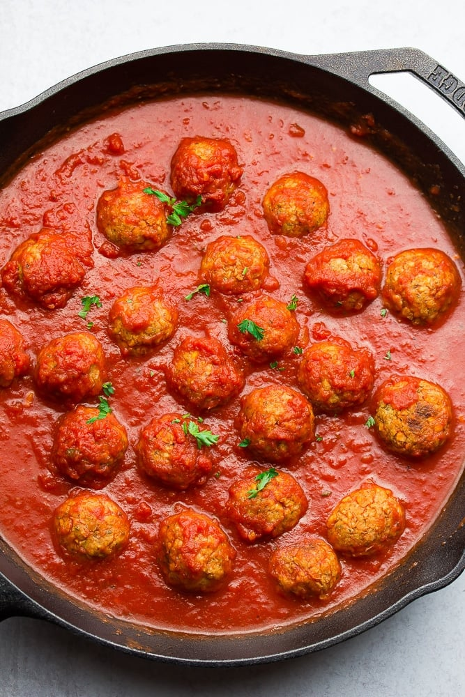

Vegan Meatballs

Description
Unstoppable Italian style vegan meatballs
made with pantry staples you probably have on
hand right now. These vegan meatballs are firm
and hold up well in any sauce you throw them in!
Prep: 10 mins Cook: 35
mins Servings: 8 servings
Ingredients
- 3 tablespoons ground flax
- 1/2 cup water
- 3 cups chickpeas, drained and
rinsed (this is how much is in
2 cans of chickpeas)
- 1/2 cup breadcrumbs
- 1/4 cup nutritional yeast
- 2 teaspoons garlic powder
- 2 teaspoons onion powder
- 1 teaspoon italian seasoning
- 1/2 teaspoon salt, or more to
taste
Steps
- Preheat oven to 425 degrees F
- In a small bowl, stir together the ground
flax and 1/2 cup water. Let sit for 5
minutes while you prepare the chickpeas.
- In a food processor with the "S" blade, add
chickpeas and pulse until there are almost
no whole beans left. If you do not have a
food processor, you can mash them by hand
with a potato masher. Add the processed
chickpeas to a large mixing bowl.
- Add the flax/water mixture and the rest of
the ingredients to the bowl. Stir with a
large wooden spoon until well combined.
The mixture will be very thick. You can
also just use your hands to make sure
everything is incorporated well
- Roll into balls (about a heaping tablespoon
each)and place on a parchment lined or
greased baking sheet.
- Place in the oven and bake for 30-35
minutes, turning once halfway through.
- While the meatballs are cooking, you can
prepare whatever else you want to have them
with. Whether it's spaghetti and marinara or
cutting up bread for meatball subs, you have
plenty of time to prepare it!
- When the meatballs are done cooking, add
them to the rest of your dish, make some
subs, or just grab a fork and dig in!!!